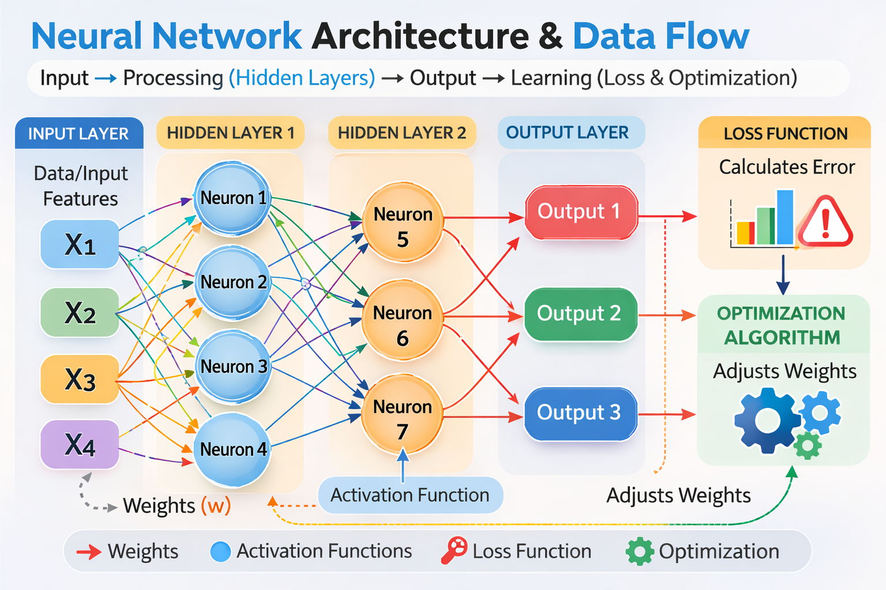

Workshop2
Dedicated artifact page for Workshop 2.
Title
Neural Network Flow Diagram

Introduction
This artifact provides a visual representation of a neural network's structure,
illustrating how data flows from the input layer through hidden layers to the output
layer. It serves as a foundational tool to understand neural network components and
their interactions.
Description
The artifact contains a clean, presentation-ready flow diagram showing:
- Input Layer: Three neurons (X1, X2, X3) receiving raw data.
- Hidden Layer: Three neurons (N1, N2, N3) processing inputs via weights and activation functions.
- Output Layer: Two neurons (Y1, Y2) producing the final prediction.
- Data Flow: Arrows show the flow from input -> hidden -> output, with labeled weights.
- Feedback Loop: Indicates the learning process through loss function and optimization algorithm.
Objective
To clearly communicate the structure and functioning of a neural network in a
simplified and visually appealing manner, making complex AI concepts accessible.
Process / Methodology
- Explored neural network structures in Neural Network Playground.
- Identified key components: layers, neurons, weights, activation functions, loss functions, and optimization algorithms.
- Designed a visual flow diagram emphasizing clarity and professional presentation.
- Color-coded layers for intuitive understanding and added feedback loop for the learning process.
Tools & Technologies Used
- AI-powered diagram generation
- Google Slides / PowerPoint (for integration)
Value Proposition
Unique Value: Provides a concise and visually intuitive representation
of neural networks suitable for educational or portfolio purposes.
Relevance to AI/ML Practice: Enhances understanding of neural network
components and their interactions, reinforcing theoretical knowledge with visual learning.
References
- Neural Network Playground (for practical experimentation)
- AI/ML course resources